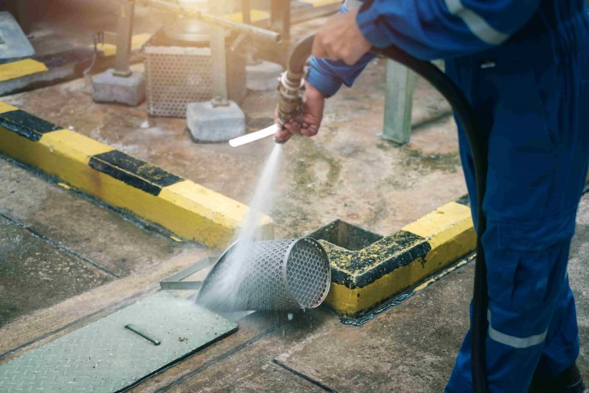

.jpg)
nettoyage indistruel
nettoyage de boreau
desinfection de loceaux
nettoyage immeuble
Entreprise de nettoyage et services
L'entretien des locaux professionnels étant complexe à organiser et chronophage, il est conseillé de faire appel à une entreprise de nettoyage professionnel compétente garantissant des prestations de qualité.
Que votre société accueille ou non des visiteurs, il est primordiale de préserver la propreté de vos locaux afin qu'ils soient accueillants.
Pourquoi solliciter une société
de nettoyage professionnel ?
Les services de notre entreprise
⇒ Nettoyage de bureau
Une entreprise intervenant dans le cadre d'un nettoyage de bureaux propose plusieurs services complémentaires comme le dépoussiérage, le rangement, le débarras d'encombrants, et le vidage des corbeilles. Ces services peuvent s’étendre aux zones de repos, salles de réunion, ascenseurs ou halls d’accueil.
⇒ Prestation de nettoyage industriel
Entreprise de nettoyage et services
Vous gagnez du temps et bénéficiez de prestations qualitatives. Vous garantissez des
conditions de travail optimales aux salariés de votre entreprise tout en améliorant votre image lors de
l'accueil de vos clients.
Offre multi-services : notre société s'adapte en fonction des tâches de nettoyage, qu'il s'agisse d'un
décrassage de sol, de la gestion des déchets, de l'hygiène des sanitaires, ou d'une désinfection à l'aide
de produits d'entretien professionnel spécifiques.
Gain de temps car vous évitez la charge conséquente de la logistique.
Services flexibles : notre entreprise peut respecter certains horaires prédéfinis.
Des protocoles de nettoyage sont prévus et nos agents sont formés pour travailler en sécurité selon les contraintes de votre secteur d'activité.
Des protocoles de nettoyage sont prévus et nos agents sont formés pour travailler en sécurité selon les contraintes de votre secteur d'activité.
⇒ Nettoyage de magasins et commerces
Le nettoyage d'un magasin se doit d'être rigoureusement effectué. Si l'on souhaite pouvoir accueillir un client dans les meilleures conditions possibles, l'intervention d'une entreprise d'expérience est indispensable.
⇒ Nettoyage dans le secteur médical
Pour garantir de bonnes conditions sanitaires et préserver la santé des patients des cabinets médicaux, la propreté des locaux doit être irréprochable.
Le nettoyage des surfaces, du linge de couchage et des espaces de restauration est indispensable pour assurer le bien-être des résidents.
⇒ Nettoyage de chantier et petits travaux
Les agents de propreté ne se contentent pas d’un simple nettoyage ou d'un débarras d'encombrants, mais d’une vraie remise en état après travaux.
⇒ Entreprise de nettoyage d'immeubles
Dans les immeubles, l'entretien des parties communes des particuliers n'est pas à la charge des locataires, mais du propriétaire ou au syndic de copropriété.
Entreprise de nettoyage et services
L'entretien des locaux professionnels étant complexe à organiser et chronophage, il est conseillé de faire appel à une entreprise de nettoyage professionnel compétente garantissant des prestations de qualité.
Les normes d’hygiène recensées
La société d'entretien en charge du nettoyage d'immeuble est responsable de la propreté des espaces communs : hall d’accueil, escaliers, paliers, et poubelles.
⇒ Lavage professionnel de vitres
Remplissez ce formulaire de devis de nettoyage pour recevoir des offres et mettre en concurrence les entreprises de propreté de votre région.
Nettoyage en région parisienne
Vous recherchez une entreprise expérimentée pour une prestation de nettoyage, de débarras ou de décontamination à Paris ?
Faites le choix d'une société d'expérience en optant pour les services d'une entreprise de nettoyage à Paris reconnue pour ses prestations impeccables.
La fédération des entreprises de propreté
Présente dans toute la France, la FEP est le porte-parole des entreprises de nettoyage auprès des pouvoirs publics. Elle a aussi pour mission de favoriser le recrutement du personnel de nettoyage grâce à l'INHNI.
.
Le lavage des vitres et baies vitrées en hauteur étant une tâche difficilement réalisable, il est conseillé de solliciter une entreprise spécialisée en nettoyage.
⇒ Entretien de parking
Missionner une entreprise spécialisée dans le nettoyage de parking garantit la collecte des résidus et la propreté des sols grâce à un balayage mécanique.
⇒ Entreprise de ménage à domicile
Les particuliers aussi peuvent faire appel à notre entreprise pour l'entretien de leur logement. Déchargez-vous du ménage quotidien dans votre maison ou votre appartement en déléguant la tâche à des spécialistes du nettoyage.